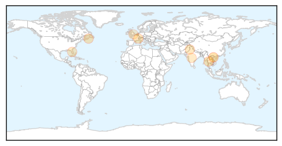

30 Day Trends
Web: 7 alerts, 0 warnings
Twitter: 0 alerts, 0 warnings
Top Articles:
- 0.957
- SGGP English Edition- Around 4 million Vietnamese people suffer hepatitis C
- 0.823
- The Kathmandu Post
- 0.771
- Hepatitis E found in donor blood
- 0.770
- Starting the conversation about hepatitis C in downtown Sydney
- 0.713
- Awareness walk marks World Hepatitis Day
- 0.679
- Travelers Leaving Country Should Plan Ahead For Immunizations
- 0.653
- Viral hepatitis is a silent killer
- 0.547
- Map of hepatitis C strains should help eradication efforts
Top Tweets:
-
No tweets found for Jul 29, 2014
Web/News Articles

Tweets

Article Locations
Article Confidences